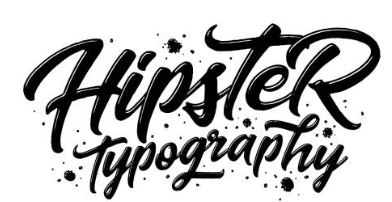

Typography plays a crucial role in instructional design as it affects readability, user engagement, and learning retention. A well-chosen typeface helps set the tone of the material, guiding the learner through the content. Effective typography balances between font size, line height, and letter spacing, which ensures text is legible across devices and screen sizes. According to Saltz (2019), the psychology of type suggests that learners may feel more motivated and connected to materials that are easy to read and visually appealing. Poor typography, such as overuse of decorative fonts, can cause distraction and reduce learning efficiency. Hence, the key is to maintain simplicity, clarity, and consistency throughout the instructional content. For instance, sans-serif fonts like Arial or Helvetica are often recommended for digital reading as they provide clarity without the additional strokes found in serif fonts.
